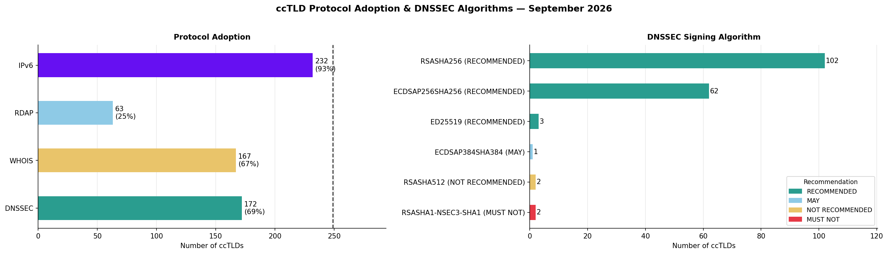

Many TLDs are run under contract with ICANN, requiring support for certain protocols. However, country-code TLDs (ccTLDs - associated with a particular country) do not have any contractual obligation to provide any particular setup, and there is a lot of variety in their technical postures. This project tracks publicly available information to map the different protocols supported across different TLDs.
Some countries have additional ccTLDs for internationalised versions of their names in non-ASCII scripts, to support Internationalised Domain Names (IDNs). These are also tracked in the underlying dataset. Although the maps use the ASCII labels as these are typically more established, the IDN ccTLDs are included in bar graphs.
The DNS records used for DNSSEC can be signed with different algorithms, which allows the protocol to be upgraded over time as cryptography advances. The latest data on which algorithms are recommended is available from IANA, and used to cross-reference whether countries are using recommended levels of encryption or not.
